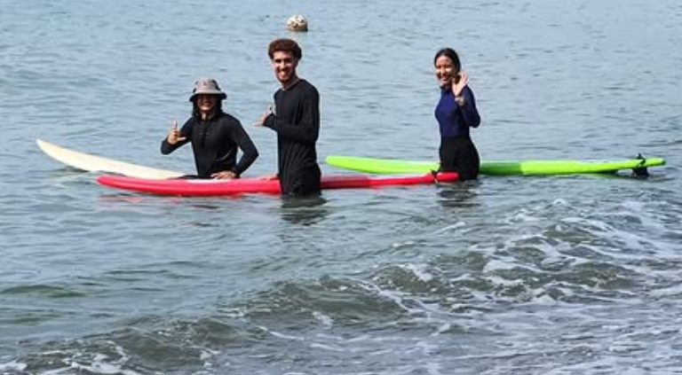
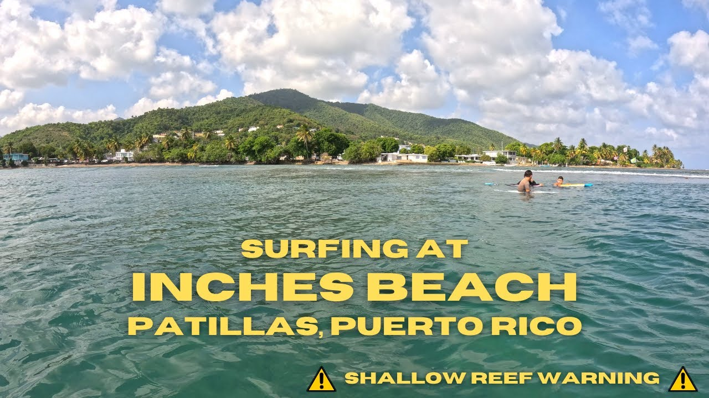
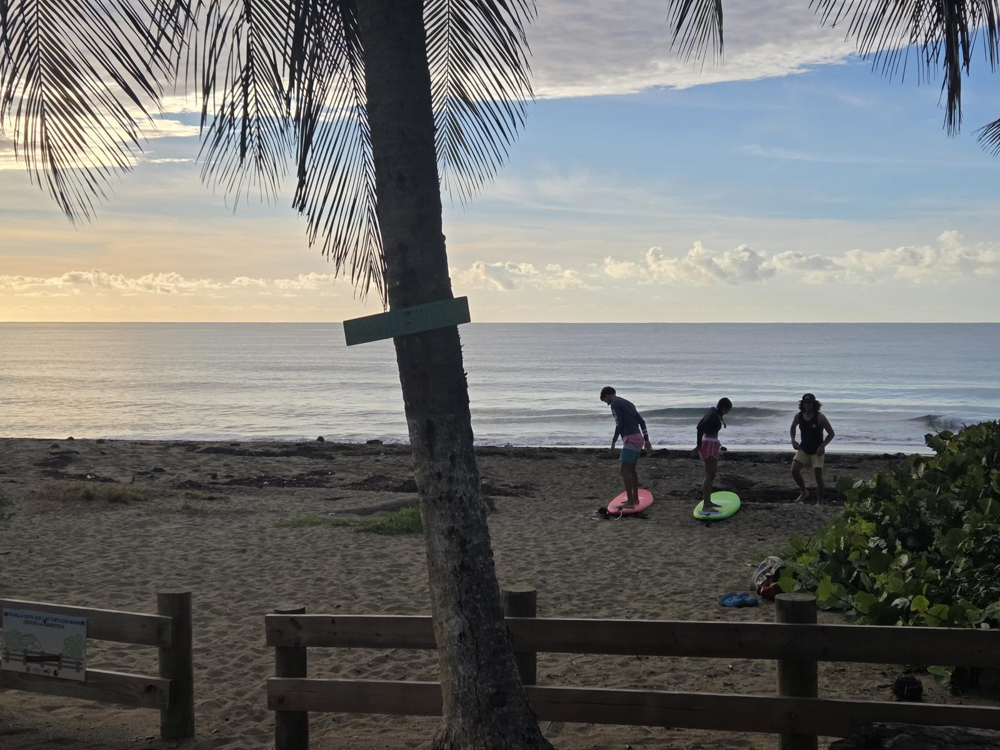
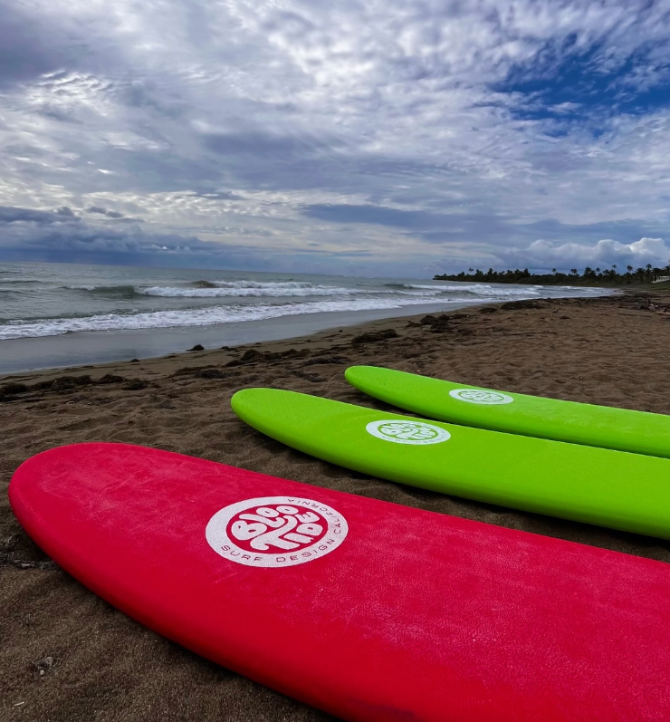
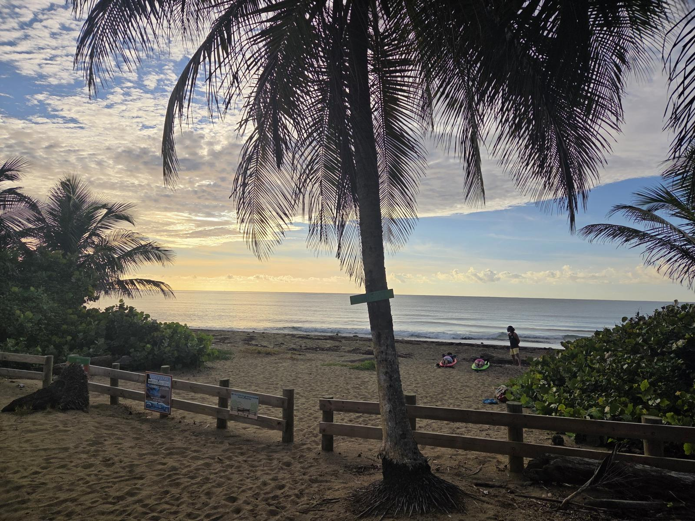
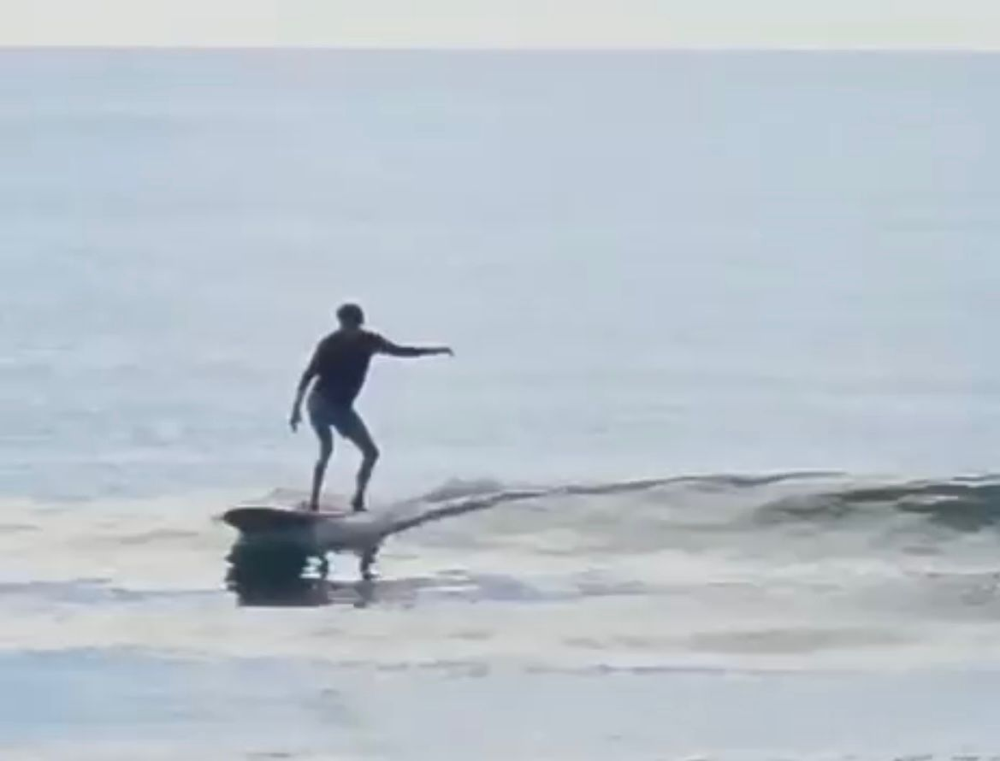

Primer contacto
Tu primera experiencia en el agua comienza con confianza y orientación clara desde la orilla.

Tu primera experiencia en el agua comienza con confianza y orientación clara desde la orilla.

Antes de surfear, aprendes a observar olas, corrientes y condiciones del océano.

Cada intento te ayuda a mejorar tu postura y estabilidad sobre la tabla.

Utilizar el equipo correcto hace que la experiencia sea más segura y cómoda.

Las clases se disfrutan en un ambiente relajado con vistas únicas del sureste de Puerto Rico.

Caerse, volver a intentarlo y celebrar cada avance forma parte del proceso.